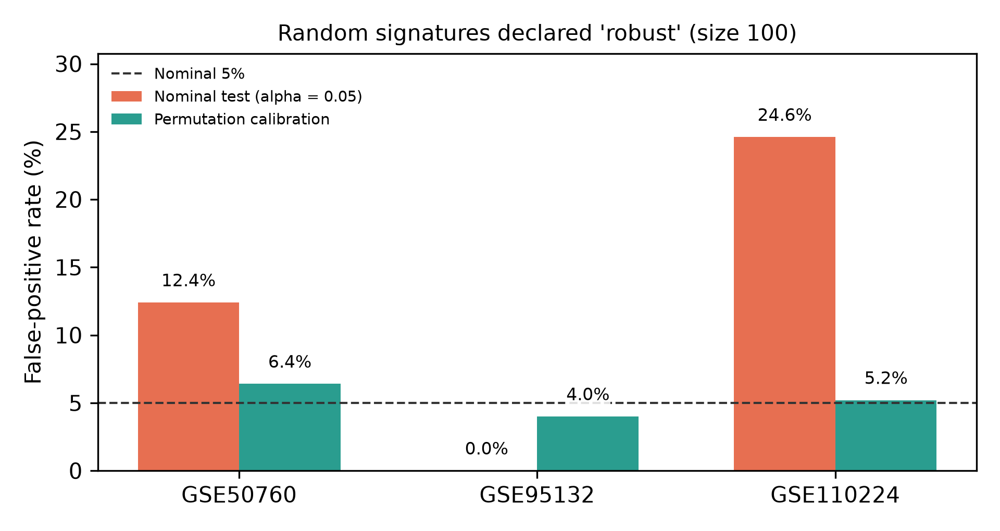
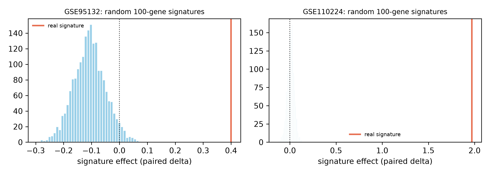
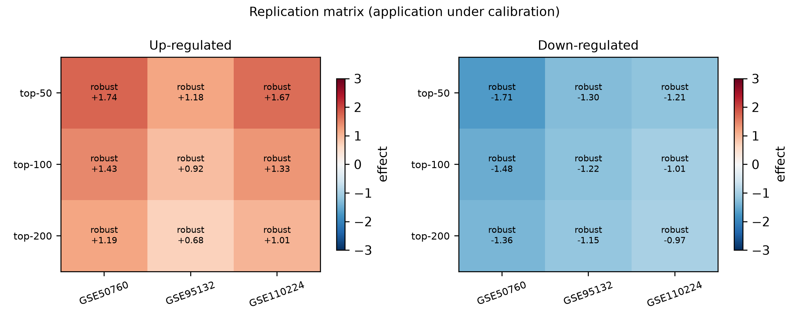
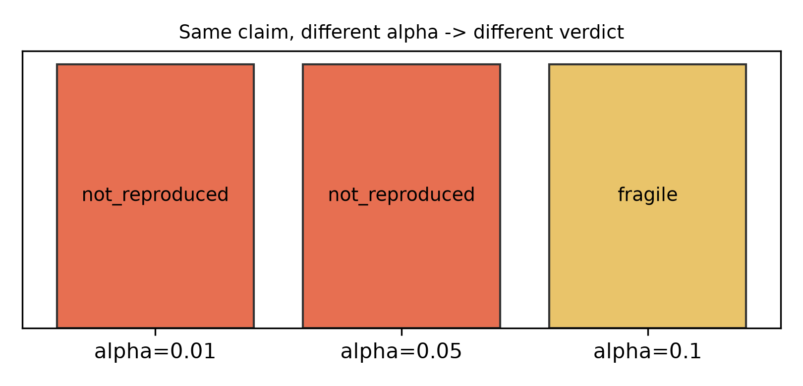

Zhicai Guo¹ (郭志才)
¹ Yifu Knowledge (Beijing) Technology Co., Ltd., Room 08A05, 7th Floor, No. Bing 2, North East Third Ring Road, Chaoyang District, Beijing, China
Correspondence: 363800649@qq.com
Keywords: signature audit; gene-set permutation; false-positive rate; reproducibility; omics
Background. Auditing whether an omics signature replicates has become a routine analytical step: a signature score is computed per sample, a paired or unpaired test is applied, and a verdict (e.g., "robust") is issued at a nominal significance level. Whether such audits actually control false positives is unknown, because the unit of inference — a set of correlated features — is not the unit assumed by sample-level tests.
Methods. We formalized the signature audit as a claim-level test and compared two procedures across three public colorectal cancer cohorts (54, 31 and 34 samples; 18, 12 and 17 donor pairs): (i) the nominal procedure, a paired Wilcoxon test on the signature score with a leave-one-pair-out stability criterion at alpha = 0.05; and (ii) a calibrated procedure that derives the null distribution from 2,000 size-matched random gene sets and reports a permutation p-value. False-positive rates were estimated with 500 random 100-gene signatures per cohort; 36 real signatures were re-audited.
Results. The nominal procedure declared 12.4% and 24.6% of random signatures "robust" in two cohorts — 2.5- and 4.9-fold above the nominal 5% — and 0.0% in the smallest cohort, where discreteness and a negative null shift made the test conservative. Permutation calibration restored false-positive rates to 6.4%, 4.0% and 5.2%, respectively. All 36 real signatures remained significant under calibration (permutation p = 0.0005, the resolution floor of 2,000 permutations). Two secondary findings emerged: the same claim changed verdict from not_reproduced (alpha = 0.05) to fragile (alpha = 0.10) with a leave-one-out pass fraction of 0.0, and effect-retention ratios between signature-selection criteria were biased by differences in the denominator, reversing the apparent ranking.
Conclusions. Nominal signature audits can overstate robustness several-fold. A size-matched gene-set permutation null restores error control without discarding real signals, and should be reported alongside — or instead of — nominal p-values. Decision thresholds and effect-retention metrics must be fixed and reported, because both can change conclusions independently of the data.
The reproducibility of biomedical findings has been debated for two decades [1–4]. In omics, a common practical response is the signature audit: a published feature set is scored in a new dataset, a test is applied, and the result is reported as "validated" or "not validated". Audits are also used internally, to decide whether a candidate signature is worth pursuing, and increasingly in automated pipelines that screen many claims.
The statistical machinery of these audits is usually borrowed from differential-expression analysis: compute a per-sample score (mean expression of the signature), compare groups with a paired or unpaired test, and declare significance at alpha = 0.05. Some audits add a stability criterion, such as leave-one-out resampling, to guard against a result driven by a single subject.
This borrowing hides a mismatch. Differential-expression tests treat genes as the units of inference and control error at the gene level. A signature audit makes an inference about a set of correlated features; its null hypothesis is not "this gene has no effect" but "this set of features is exchangeable with other sets of the same size". When features are correlated, and when a study carries global shifts (batch, composition, platform), random feature sets are not neutral: their scores can be systematically displaced and can pass a sample-level test far more often than the nominal rate.
We therefore asked a simple question that, to our knowledge, has not been answered empirically: at a nominal 5% level, how often is a random signature declared robust? We estimated this false-positive rate in three colorectal cancer cohorts, compared it with a gene-set permutation calibration, and re-audited real signatures. We also recorded two decision-level phenomena that affect interpretation: threshold dependence of the verdict, and a bias in the effect-retention ratio commonly used to compare selection criteria.
Our contributions are: (i) an empirical demonstration that nominal signature audits inflate robustness by 2.5–5-fold, with the direction of the inflation depending on the cohort's null shift; (ii) a calibration procedure — size-matched gene-set permutation — that restores false-positive rates to approximately the nominal level; (iii) evidence that calibrated audits retain all 36 real signatures tested; and (iv) two cautions about decision thresholds and retention metrics that are independent of the calibration issue.
A claim is specified as a JSON object containing the data binding (matrix and metadata files, value type), the comparison (group column, groups A and B, optional pairing column), the signature (an explicit feature list or a file), the expected direction, and the decision thresholds: alpha, minimum effect, and minimum stability fraction. Thresholds are recorded in the output and are not changed after the audit begins.
The signature score of a sample is the mean value of the signature features present in the matrix. For paired designs, within-pair differences are computed and tested with a Wilcoxon signed-rank test; for unpaired designs, a Mann–Whitney U test is used for small feature sets and a Welch t-test for genome-wide scans. Robustness is assessed by leave-one-pair-out resampling: the test is repeated with each pair removed, and the fraction of runs that remain significant in the expected direction is reported. A claim is robust if the primary test passes and this fraction is at least 0.80, fragile if the primary test passes but stability does not, not_reproduced if the primary test fails, and inconclusive if data are insufficient.
Let the signature effect be the mean paired difference of the signature score. Under the nominal procedure, the null distribution of this effect is approximated by the sampling distribution of the score across pairs, which assumes that the score's variation is driven by subject-level noise. When features are correlated, this assumption fails: the effective number of independent features is much smaller than the signature size, and a shared shift across features (e.g., a global expression difference between conditions) moves the score of any feature set, including a random one.
The appropriate null is therefore a gene-set null: the distribution of the signature effect over feature sets of the same size, drawn from the same expression matrix. We estimate it by permutation of feature labels.
For each cohort, we precompute the per-pair difference matrix (pairs × features). A null pool of 2,000 random feature sets of the same size as the signature is drawn without replacement; each set's effect is computed as the mean paired difference of its features. The permutation p-value for an observed effect is
p = (1 + #{null effects ≥ observed}) / (B + 1)
for an up-direction claim, with the inequality reversed for a down-direction claim (B = 2,000). A claim is calibrated-significant if p < alpha. We use size-matched sets; expression-matched sampling can be added when a signature's expression distribution differs markedly from the transcriptome, but was not required here.
For each cohort we drew 500 independent random 100-feature signatures and applied the nominal procedure with alpha values of 0.01, 0.05 and 0.10 and stability thresholds of 0.6, 0.8 and 1.0, with the claim direction fixed to "up". The false-positive rate is the fraction of random signatures declared robust. The same 500 signatures were evaluated with the permutation p-value at the three alpha levels. Random seeds were fixed.
To confirm that calibration does not discard genuine signals, we constructed real signatures from each of the three cohorts (top-100 by mean paired effect, and top-100 by t-statistic, in each direction) and audited them in all three cohorts (36 source–target combinations). These signatures were also used in a cross-cohort replication matrix (sizes 50, 100 and 200).
GSE50760 (RNA-seq, FPKM; 54 samples; 18 patients each contributing primary tumour, normal colon and liver metastasis) [11]; GSE95132 (RNA-seq, read counts; 31 samples; 12 paired tumour/adjacent-normal patients); GSE110224 (Affymetrix HG-U133 Plus 2.0; 34 samples; 17 paired tumour/normal patients). All are public, de-identified datasets. Signature candidates for the application analysis were derived from the Expression Atlas differential-expression export for GSE50760 (primary tumour versus normal), taking genes with |log2 fold change| ≥ 1.5.
The audit engine, permutation calibration, half-sample protocol, replication and cross-signature matrices, and data-preparation utilities are implemented in Python 3.12 (numpy, pandas, scipy, scikit-learn, statsmodels). A command-line interface and a standard operating procedure accompany the code, and a single script regenerates all reports and runs the 26-test suite.
At alpha = 0.05 and a stability threshold of 0.80, the nominal procedure declared 12.4% of random 100-gene signatures robust in GSE50760 and 24.6% in GSE110224 — 2.5- and 4.9-fold above the nominal 5% (Table 1, Fig. 1). In the smallest cohort, GSE95132 (12 pairs), the rate was 0.0% at every alpha tested, which is not evidence of good calibration: with 12 pairs the Wilcoxon test is discrete, and the mean effect of random signatures in this cohort was negative (−0.106), so an up-direction random claim rarely passes. Miscalibration therefore has a direction: a test that is conservative for up-direction claims in this cohort would be liberal for down-direction claims.
Table 1. False-positive rates of random signatures (%). Nominal procedure with stability ≥ 0.80, and permutation calibration, at three alpha levels; 500 random 100-gene signatures per cohort.
| Cohort (pairs) | Nominal α=0.01 | Nominal α=0.05 | Nominal α=0.10 | Perm α=0.01 | Perm α=0.05 | Perm α=0.10 |
|---|---|---|---|---|---|---|
| GSE50760 (18) | 6.0 | 12.4 | 18.8 | 1.4 | 6.4 | 11.4 |
| GSE95132 (12) | 0.0 | 0.0 | 0.0 | 1.4 | 4.0 | 7.6 |
| GSE110224 (17) | 11.4 | 24.6 | 30.8 | 1.6 | 5.2 | 10.4 |
The null distributions of random signature effects were not centered at zero in all cohorts: the mean was 1.5 × 10⁻⁵ (SD 0.043) in GSE50760, −0.106 (SD 0.059) in GSE95132, and 0.008 (SD 0.037) in GSE110224 (Fig. 2). A shift of −0.106 is comparable to the effect sizes of many real signatures; a test that ignores it is testing the wrong hypothesis. Correlated features and global shifts are sufficient to produce this displacement; no biological signal is required.
With the gene-set null, false-positive rates at alpha = 0.05 fell to 6.4%, 4.0% and 5.2% for the three cohorts (Table 1, Fig. 1). At alpha = 0.01 the calibrated rates were 1.4–1.6%, and at 0.10 they were 7.6–11.4%, closely tracking the nominal levels. The residual deviations are consistent with the finite null pool (B = 2,000) and with the correlation between the 500 test signatures and the null pool.
All 36 real signatures — three sources, two selection criteria, two directions, three target cohorts — had permutation p = 0.0005, the smallest value attainable with 2,000 permutations (1/2001). Their effects ranged from −2.77 to +2.11. Calibration therefore separates random from real signatures rather than weakening all claims: the real signals sit far outside the gene-set null, while the random ones are the ones whose nominal p-values were misleading.
We re-ran one claim (a down-regulated signature derived on half of GSE95132 and tested on the held-out half) at alpha = 0.01, 0.05 and 0.10. The primary p-value was 0.0522 in all cases. At 0.01 and 0.05 the verdict was not_reproduced; at 0.10 it became fragile (Fig. 4). The leave-one-out pass fraction was 0.0 at every threshold, so the claim never became robust. Two lessons follow: a verdict is uninterpretable without its locked threshold, and significance and stability are separable — this claim was near the significance boundary yet structurally unstable.
As an application of the calibrated procedure, 36 signature audits (three cohorts × three sizes × two directions) were performed on the colorectal cancer tumour-versus-normal signature; all were robust, with effects from +0.68 to +1.74 (up) and −0.97 to −1.71 (down). Effect size decreased with signature size in every cohort, and was largest in the cohort that supplied the signature (Fig. 3), consistent with signature-specific overfitting that cross-cohort testing exposes.
First, effect-retention ratios can reverse rankings. When comparing selection criteria, we initially computed retention as the transported effect divided by the source effect. By this metric, t-statistic selection appeared superior (0.80 vs 0.66). However, t-statistic signatures had much smaller source effects (+0.93 vs +1.88), so their absolute transported effects were lower (+0.85 vs +1.22 in GSE95132). The apparent improvement was a denominator artefact; absolute transported effects should be compared, or the denominator held fixed.
Second, cross-cohort consensus selection failed. Selecting genes by agreement across two training cohorts, then testing in a held-out cohort, produced 0 of 18 robust verdicts (mean |effect| 0.73), compared with 15 of 18 for single-cohort effect-ranked selection (mean |effect| 1.34). Agreement across cohorts favours weak but stable features and discards cohort-specific strong signals. This negative result argues against consensus-based signature construction when the goal is transport of a strong effect.
The central result is simple and, we believe, consequential: a nominal 5% signature audit is not a 5% procedure. Random gene sets were declared robust at 12.4% and 24.6% in two of three cohorts, and at 0% in the third — the error rate is not merely inflated but cohort- and direction-dependent, because the null distribution of a signature score is shaped by feature correlation and global shifts rather than by the nominal sampling model. A size-matched gene-set permutation restores rates close to nominal (4.0–6.4% at alpha = 0.05) and leaves all real signatures significant.
This has a direct implication for the literature that reports signatures as "validated" on the basis of a nominal test in an independent cohort. Our results do not show that such validations are wrong, but they do show that the nominal p-value alone cannot distinguish a real signature from a random set of the same size in cohorts with the correlation and shift structure we examined. The audit needs a null that matches the unit of inference.
Gene-set permutation is standard in gene-set enrichment analysis [8], where it is used precisely because feature sets are correlated. Our contribution is to show that the same logic is required at the claim level in signature audits, to quantify the resulting error inflation in real cohorts, and to provide a reproducible implementation with locked thresholds and graded verdicts. Stability selection [9] addresses a related problem at the level of feature selection; our calibration addresses the level of the audit's decision.
The secondary findings are practical. Threshold locking is not bureaucracy: the same claim moved from not_reproduced to fragile between alpha = 0.05 and 0.10, with identical data and an unchanged leave-one-out fraction of zero. And retention ratios must be interpreted with their denominators: in our comparison, the criterion with the higher retention ratio had the lower absolute transported effect.
We recommend five practices for signature audits: (i) specify the null model explicitly, and prefer a size-matched gene-set permutation; (ii) report permutation p-values alongside nominal ones; (iii) fix alpha, minimum effect and stability thresholds before analysis and report them; (iv) report effect sizes and leave-one-out stability, not only significance; and (v) when comparing selection criteria, compare absolute transported effects at fixed signature size.
First, the calibration study covers three cohorts from one disease and one geographical region; the magnitude of inflation will differ elsewhere, although the mechanism (correlation plus global shift) is general. Second, the null pool contains 2,000 sets, which limits the resolution of permutation p-values to 5 × 10⁻⁴; larger pools are needed for claims near that boundary. Third, we used size-matched but not expression-matched sampling; for signatures whose expression distribution is atypical, expression matching may be necessary. Fourth, the permutation null treats features as exchangeable given the matrix; it does not model pathway structure or feature-feature dependence beyond what is empirically present. Fifth, verdicts are audit outcomes, not biological validation: a robust verdict means the signature's effect is unlikely under the gene-set null in that cohort, not that the underlying biology is established. Sixth, batch and covariate effects were not modelled; they contribute to the global shifts that the permutation null absorbs but does not explain.
Code. The audit engine, permutation calibration, half-sample protocol, replication matrices and data-preparation utilities, together with a standard operating procedure and a one-command reproduction script, are available at https://github.com/johnson7788/calibrated-signature-audit. A permanent archive will be deposited at Zenodo [DOI].
Data. GSE50760, GSE95132 and GSE110224 are public NCBI GEO datasets; the GSE50760 differential-expression export was obtained from Expression Atlas. Processed matrices, claim specifications, figures and the manuscript PDF are archived at https://huggingface.co/datasets/johnson/calibrated-signature-audit.
Ethics. This study used only public, de-identified datasets; no new human-subjects data were collected and no ethics approval was required.
AI disclosure. The author used an AI coding and writing assistant to implement parts of the software, run analyses and draft this manuscript. All analyses, numerical results and text were reviewed and verified by the author, who takes responsibility for the content.
Funding. This research received no specific grant from any funding agency.
Author contributions. Zhicai Guo: Conceptualization, Software, Formal analysis, Writing – original draft.
Competing interests. The author declares no competing interests.
Figure 1. Nominal versus calibrated false-positive rates. Fraction of 500 random 100-gene signatures declared robust at alpha = 0.05 (stability ≥ 0.80) by the nominal procedure and by gene-set permutation calibration, in three cohorts. The dashed line marks the nominal 5%.
Figure 2. Gene-set null distributions. Distribution of signature effects for 2,000 random 100-gene sets in GSE95132 (left) and GSE110224 (right). Note the negative shift of the null in GSE95132 (−0.106), which makes an up-direction nominal test conservative. The vertical line marks a representative real signature.
Figure 3. Replication matrix under calibration. Effect sizes and verdicts for up- and down-regulated signatures of size 50, 100 and 200 across three cohorts. All 36 audits were robust; effect size decreases with signature size and is largest in the source cohort.
Figure 4. Threshold sensitivity. The same claim (GSE95132 half-sample down-regulated signature) at alpha = 0.01, 0.05 and 0.10. The verdict changes from not_reproduced to fragile, but never to robust; the leave-one-out pass fraction is 0.0 at every threshold.



